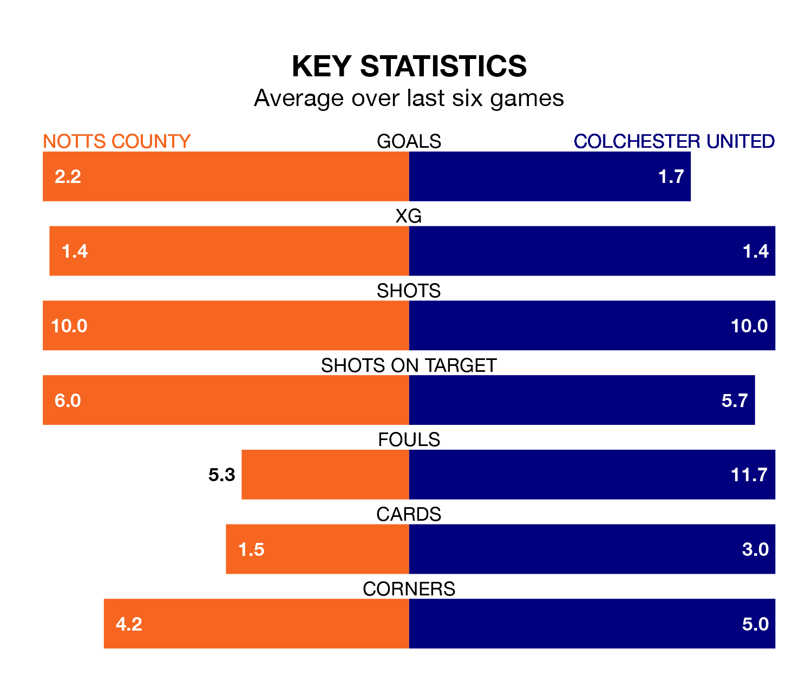

Struggling Colchester United face Notts County away at Meadow Lane on Saturday looking to build on a win in their last league outing.
After securing all three points with a 2-0 victory over Grimsby Town on Tuesday, the U's sit 22nd in EFL League Two.
They travel to play a County side 15th in the standings, who lost in their last match, 5-2 against Stockport County.
With 88 goals in 44 games so far this season, County are the league's second-highest scorers with 2.0 goals per game. But they are conceding more than average too, letting in 85 goals at a rate of 1.9 per game.
Colchester, meanwhile, are below average scorers, with 1.3 goals per game, compared to a league average of 1.5. They have conceded 1.7 goals per game.
In Macaulay Langstaff, the hosts have the league's sharpest shooter so far this season. He has notched 27 goals in 44 appearances.
His goal rate of one every 143 minutes is quicker than that of Joseph Taylor, United's top scorer with a goal every 178 minutes, and a total of 11 goals in 25 games.
In the last 10 years, County and Colchester have played each other on nine occasions. County won five of them, Colchester two, and they drew twice.
On average, County scored 2.1 goals and the U's 1.6 in those matches.
Their last meeting was on September 30, when Colchester won 5-4 at home.
County are in mixed form in EFL League Two, with two wins and a draw from their last six games.
With three wins and a draw over that period, the U's' form is better – they have taken 10 points from 18, compared to County's seven.
Saturday's match will be refereed by Darren Drysdale, who has taken charge of 15 EFL League Two games so far this season, issuing two red cards and booking 57 players. He has awarded five penalties.
The last County game Drysdale refereed was a 3-1 home win against Swindon Town on October 3. He is yet to oversee a match featuring Colchester this season.
Updated: 15:40 (UTC), 18/04/24